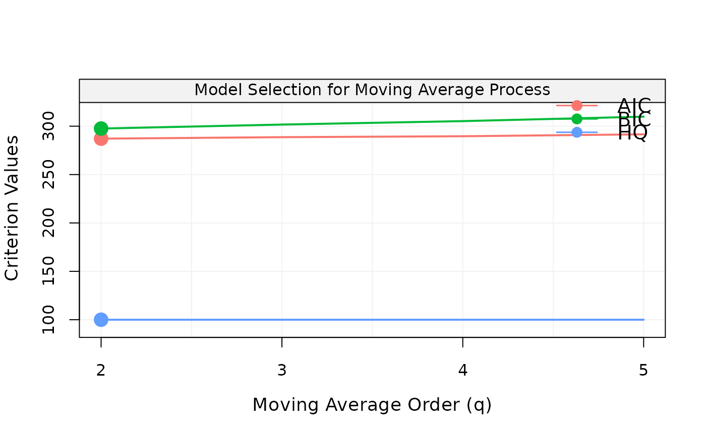
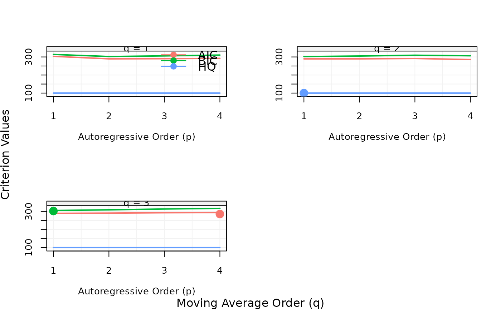

This function retrieves the best model from a selection procedure.
best_model(x, ic = "aic")
| x | An object of class
|
|---|---|
| ic | A |
#> Warning: package ‘bindrcpp’ was built under R version 3.4.4best_model(x, ic = "aic")#> #> Call: #> arima(x = xt, order = c(1, 1, 0), include.mean = include.mean) #> #> Coefficients: #> ar1 #> 0.4774 #> s.e. 0.0903 #> #> sigma^2 estimated as 1.415: log likelihood = -157.8, aic = 319.59set.seed(19) xt = gen_ma1(100, 0.3, 1) x = select_ma(xt, q.min=2L, q.max=5L) best_model(x, ic = "bic")#> #> Call: #> arima(x = xt, order = c(0, 0, 2), include.mean = include.mean) #> #> Coefficients: #> ma1 ma2 intercept #> 0.0526 0.0534 0.0368 #> s.e. 0.1007 0.1091 0.1079 #> #> sigma^2 estimated as 0.9544: log likelihood = -139.56, aic = 287.13set.seed(20) xt = gen_arma(100, c(.3,.5), c(.1), 1, 0) x = select_arma(xt, p.min = 1L, p.max = 4L, q.min = 1L, q.max = 3L)best_model(x, ic = "hq")#> #> Call: #> arima(x = xt, order = c(4, 0, 2), include.mean = include.mean) #> #> Coefficients: #> ar1 ar2 ar3 ar4 ma1 ma2 intercept #> 1.5198 -0.7319 -0.4825 0.5615 -1.2290 1.0000 0.2345 #> s.e. 0.0846 0.1670 0.1679 0.0846 0.0401 0.0462 0.4986 #> #> sigma^2 estimated as 0.8175: log likelihood = -134.86, aic = 285.73